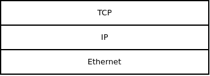

This tutorial is meant as an introduction to libdill socket library. We are going to develop a simple version of wget utility, that can be used to download webpages from the net.
To avoid parsing the URLs our program will accept 3 parameters: A protocol (either http or https), the server name and the resource to download from the server:
$ wget http www.example.org /index.htmlThe program will, in turn, write the downloaded webpage to stdout.
Let's start with some basic argument checks (there's nothing libdill-specific about that):
#include <assert.h>
#include <errno.h>
#include <libdill.h>
#include <stdio.h>
#include <string.h>
int main(int argc, char *argv[]) {
if(argc != 4) {
fprintf(stderr, "Usage: wget [protocol] [server] [resource]\n");
return 1;
}
int port;
if(strcmp(argv[1], "http") == 0) port = 80;
else if(strcmp(argv[1], "https") == 0) port = 443;
else {
fprintf(stderr, "Unsupported protocol.\n");
return 1;
}
return 0;
}The first thing we have to is to convert the name of the server to its IP address. In other words, we have to do a DNS query. To that end, libdill provides ipaddr_remote function:
struct ipaddr addr;
int rc = ipaddr_remote(&addr, argv[2], port, 0, -1);
if(rc != 0) {
perror("Cannot resolve server address");
return 1;
}Note that errors from all libdill functions are reported in standard POSIX way: Each function may indicate an error in a different way. It case of ipaddr_remote it happens to be by returning -1. However, the actual error code is always passed in errno. Adhering to this standard system allows us to use standard POSIX error handling functions such as perror.
Once the IP address of the web server is known, we can create a TCP connection to the server:
int s = tcp_connect(&addr, -1);
if(s < 0) {
perror("Cannot connect to the remote server");
return 1;
}Once again, the error is handled in a POSIX-y way. From now on, to keep the tutorial succint, we are going to ommit error handling code. However, if you want to add it, all you have to do is to follow the above pattern.
At the end of the program we want to close the TCP socket. There are two ways to do that. First, you can use hclose, the generic function for closing handles. This function does close the socket and deallocates all the allocated resources, however, it doesn't negotiate an orderly shutdown with the remote peer. If you use hclose to close a socket, there's no guarantee that the peer will even notice, let alone shutting down in an orderly manner. While this may sound like a bad idea there are legitimate cases where you should do exactly that. If you are under DoS attack, for example, it makes sense to close offending connections as soon as possible rather than trying to play nice with the attacker:
rc = hclose(s);
assert(rc == 0);The other way to close a socket is to execute a protocol-specific shutdown procedure:
rc = tcp_close(s, -1);
assert(rc == 0);Here's what this function does under the hood: First, it closes the outbound half of the connection. Then it reads and discards the data from the peer. Finally, when the inbound half of the connection is closed by the peer it exits. That behaviour, of course, can be exploited by a malicious peer. The peer can ignore the shutdown request and swamp us with unwanted data. Therefore, the function has a deadline parameter. In a real-world application you should give peer only a limited amount of time to shut down the connection:
rc = tcp_close(s, now() + 1000);
assert(rc == 0);Now let's compile what we've written so far.
We will be using TLS sockets which are not part of the vanilla libdill build, so we'll have to rebuild it with --enable-tls option. To do that we will need OpenSSL version 1.1.0. or later. To check currently installed version of OpenSSL run openssl version from the command prompt. Once you've installed proper version of OpenSSL rebuild libdill like this:
$ ./configure --enable-tls
$ make
$ sudo make installThen build the test program:
cc -o wget wget.c -ldillTest it by connecting to example.org remote server:
$ ./wget http www.example.org /index.htmlThe program won't do anything visible but if it didn't fail, it means that it have successfully connected to the remote server.
To understand what we are going to do next, one has to understand that, instead of full-blown shrinkwrapped protocols, libdill provides a repository of network microprotocols that can be assembled in different ways to create more complex protocols.
In essence there are two ways to combine protocols. One of them is to stack one protocol on top of another. For example, typical network stack is composed of TCP living on top of IP living on top of Ethernet:

Another way to combine two protocols is to shutdown one of them and start another one. For example, websockets start with HTTP negotiation then switch to a different, binary, protocol:
In our case we are going to stack HTTP on top of TLS on top of TCP. Once HTTP negotiation is finished we'll shut down the HTTP protocol and we will continue with raw TCP/TLS:

Technically, the way to stack one protocol on top of another is to use one of the attach functions. In our case we want to stack TLS on top of our existing TCP connection:
s = tls_attach_client(s, -1);
assert(s >= 0);When you stack one protocol on top of another the handle to the underlying protocol will not be available any more. It's a safety measure. You don't want user of a TLS socket to be able to write random data to the underlying TCP connection and thus confuse the TLS implementation. That being the case, there's no need to preserve the original TCP protocol handle. We can reuse the existing variable s to keep the handle of TLS protocol.
Another thing to keep in mind is that if attach function fails, the protocol stack may be in some broken intermediary state. To prevent user from trying to use it and experiencing undefined behaviour, the entire protocol stack is automatically deallocated.
If you want to do a similar trick yourself hclose on the socket does exactly that: It deallocates the entire protocol stack.
Anyway, there's one more problem with our implementation. User is able to specify either http protocol or https protocol. Therefore, TLS protocol layer must be made optional:
if(port == 443) {
s = tls_attach_client(s, -1);
assert(s >= 0);
}At the end of the program we want to use detach function to safely tear down the topmost protocol layer (TLS in our case) and retrieve the underlying TCP socket:
if(port == 443) {
s = tls_detach(s, -1);
assert(s >= 0);
}Once again, if detach function fails it deallocates the entire protocol stack.
Now we can compile the program and test whether we can open an HTTPS connection to www.example.org.
HTTP protocol is used to initiate the conversation with the web server, to let it know what page we are looking for or any other options we may like to convey.
We are going to layer HTTP protocol on top of the underlying protocol stack the same way as we did with TLS:
s = http_attach(s);
assert(s >= 0);
s = http_detach(s, -1);
assert(s >= 0);After attaching the HTTP socket, we can send the request to the webserver:
rc = http_sendrequest(s, "GET", argv[3], -1);
assert(rc == 0);Complemented by a list of options:
rc = http_sendfield(s, "Host", argv[2], -1);
assert(rc == 0);
rc = http_sendfield(s, "Connection", "close", -1);
assert(rc == 0);Host option is mandatory in HTTP/1.1 and we will simply fill in the server name. By setting Connection option to close we are asking the web server to close the connection after it sends us the web page. If we did not set that option it would leave the connection open just in case we wanted to send more HTTP requests.
Finally, we have to inform the server that we are done with the request and that it can process it now. On the protocol level this means that the socket will send an empty line to the server:
rc = http_done(s, -1);
assert(rc == 0);Now we can receive the response from the server:
char reason[256];
rc = http_recvstatus(s, reason, sizeof(reason), -1);
assert(rc >= 0);
fprintf(stderr, "%d: %s\n", rc, reason);After the call rc will contain the status code returned by the server, such as 200 for "OK" or 404 for "Page not found". Also, reason will contain textual description of the error. Having nothing better to do with these values we'll just print them to stderr.
Afterwards, the server sends us a list of options. Each option is a name-value pair. Once again, we have no use for them, so we'll just print them to stderr:
while(1) {
char name[256];
char value[256];
rc = http_recvfield(s, name, sizeof(name), value, sizeof(value), -1);
if(rc == -1 && errno == EPIPE) break;
assert(rc == 0);
fprintf(stderr, "%s: %s\n", name, value);
}
fprintf(stderr, "\n");Note that error code EPIPE signals an orderly shutdown of the HTTP protocol. Specifically, it means that the server sent a blank line. At that point we are ready to detach the HTTP protocol and retrieve the underlying TCP socket.
Compile and run your program. Check which HTTP options we are getting from www.example.org.
Now the server is about to send us the HTML page. The only thing we want to do with it is to write it to stdout so there's no need for any fancy protocols. The TCP socket we have will be fully sufficient for the job.
To understand send/recv functions one has to understand that there are two diffent kinds of sockets. There are bytestream sockets that can be used via bsend/brecv functions. And then there are message-based sockets usable via msend/mrecv functions.
The difference between the two is that the former does not preserve message boundaries. The latter does. TCP and TLS are examples of bytestream protocols. UDP and Websockets are examples of message-based protocols.
Further, when layering protocols, it's not just that each protocol is either bytestream- or message-based. It's also that it requires either a bytestream-based or message-based protocol to live on top of. For example, TLS protocol requires a bytestream-based underlying protocol. So it's all right to layer it on top of TCP. However, trying to attach to an message-based UDP socket would fail.
In any case, we are dealing with TCP protocol now, which is a byteastream protocol. Therefore, we will use brecv function to read data from the socket. We will read one byte at a time:
while(1) {
unsigned char c;
rc = brecv(s, &c, 1, -1);
if(rc == -1 && errno == EPIPE) break;
fprintf(stdout, "%c", c);
}
fprintf(stderr, "\n");Once again, notice how the EPIPE error code is used to indicate that the protocol was terminated by the peer. In this particular case, the TCP connection was closed by the server.
Compile the program and try to use it to download webpages from different sites!
If your client cannot connect directly to the remote host it is often required
that the connection is made via a proxy service. In the case of a SOCKS5 proxy
the initial connection is made to the proxy (via proxy hostname/ip and port)
and then a request is passed to the proxy to connect out to the remote host.
Authentication to the proxy and connection through the proxy to the remote host
is via a single call to socks5_client_connectbyname. If username and
password are set then the call will allow for basic authentication. If not,
the client will attempt to connect without authentication.
Note that once the connection to the proxy is made there is no additional proxy
protocol. The proxy becomes transparent and all bytes sent to the proxy are
forwarded to the remote host. Any protocol compatible with a bytestream (e.g.
tls, http) can then be initiated and will be passed through the proxy.
Also, regardless of the type of connection from the client to the proxy, the
connection from the proxy to the remote host is a (plaintext) TCP connection.
If the connection should be encrypted through to the remote host then
'tls_attach_client' should be called after 'sock5_client_connectbyname'.
char *host = argv[2];
char *proxy_host = argv[4];
int proxy_port;
sscanf(argv[5], "%d", &proxy_port);
rc = ipaddr_remote(&addr, proxy_host, proxy_port, 0, -1);
if(rc != 0) {
perror("Cannot resolve SOCKS5 proxy address");
return 1;
}
s = tcp_connect(&addr, -1);
if(s < 0) {
perror("Cannot connect to the SOCKS5 proxy");
return 1;
}
rc = socks5_client_connectbyname(s, username, password, host, port, -1);
if (rc != 0) {
perror("Error connecting to remote host via SOCKS5 proxy");
return 1;
}